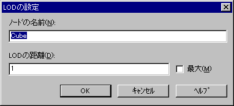

The following tabs are available in the LOD (Level of Detail) node properties:
Use the "LOD" tab to view the object nodes linked to each LOD level, listed according to distance. The tab can also be used to modify the distances.

If you want to modify LOD distances, select the target node and then click the "Modify" button, or simply double-click on the target node. The LOD settings dialog will appear, as shown below:
The node name of the current node is shown. This name can be changed, and it is also possible to specify a LOD level distance. If you want the object always to be displayed, you can simply check the Maximum box.
Click the OK button when you are finished with the LOD settings, and the nodes will be automatically sorted according to LOD distance.